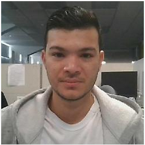

Personal Info
- Name: Andres Mauricio
- LAstname: Arrieta Afanador
- Age: 27
- Birth Date: Oct 03, 1991
Systems engineer with over 6 years of experience in the customer and technical support area, proficient in IT and programming.
Hands-on Experience with Cisco related products and services with activities that go from deployment and advisories to troubleshooting
and product replacement.
Virtualization technologies (VMWare, VirtualBox) Auth servers (Windows-based auth servers, NPS, domain controllers, Active Directory,
LDAP, etc), interoperability with MAC OS based environments, and also BYOD environments, and also has helped me to become familiar with AWS,
Docker and with the DevOps Culture and tools.